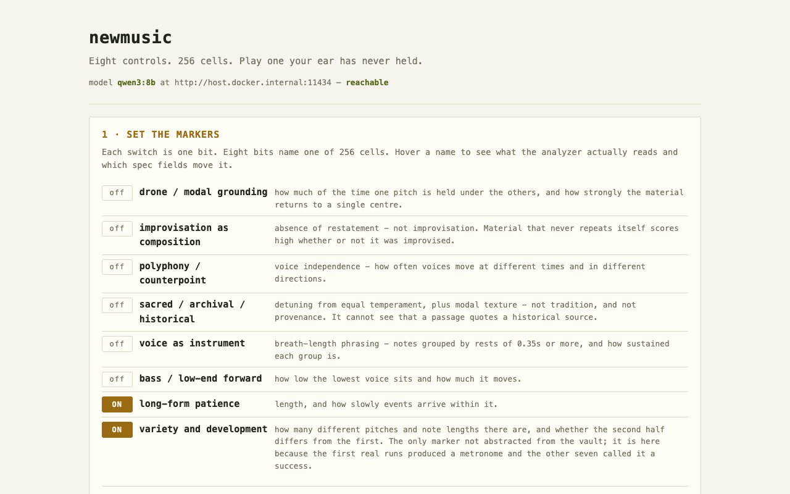

newmusic
Most recommenders converge: they model your ear and return more of what it already recognises. This one builds that model precisely and then runs it backwards, to find and play the combinations your ear has never had to hold.

The eight controls
Drone and modal grounding, improvisation as composition, polyphony and counterpoint, the sacred, archival and historical, voice as instrument, bass and low end forward, long-form patience, and variety and development. They come from a taste profile built around eleven anchors: Matana Roberts, Hildegard von Bingen, the motet repertoire, Dylan, live Dead, classical guitar, Miles, Cecil Taylor, jazz bass, Joni and Eno. Each marker is a score from 0 to 1, measured in plain code from the notes themselves.
The eighth was not part of the original seven. It was added after the loop produced 654 notes over 602 seconds on a single pitch, a single duration and a single velocity, and the other seven scored that metronome a success.
Blind spots
Eight on-or-off markers give 256 cells, and the eleven anchors occupy 10 of them. A blind spot is an empty cell whose markers are each well supported across the corpus but which no single anchor holds together: bass-forward and sacred but not long-form, say. This instrument plays it. Blind spots are ranked by support times distance from anything occupied, so a distant cell built from familiar materials outranks a near one, and the instrument only aims at cells it has been seen to reach.
The loop
You set the controls; a generator running on your own machine proposes a score specification; plain code expands it into notes; analyzers measure what was actually produced; and an adjudicator checks whether it landed in the cell you aimed at, feeding the signed error on each marker back if it did not. The generator never declares its own output successful. Code measures it.
The interface
A page in your browser shows the controls, each with what its analyzer actually reads, and a map of all 256 cells: cells holding one of your anchors, cells the grammar has been seen to produce, and cells nothing has reached. Flipping a switch moves a cursor across the map, and clicking a cell sets the switches. Attempts stream in as they happen, showing where each one landed and how far off each marker was. Every attempt can be played back and rated on two separate sliders, would you listen to this, and does it sound like what was asked for, and the ratings are evidence about the analyzers, never an input to them. The audio is a preview from plain oscillators tuned in cents; the MIDI and MusicXML files are the output, and they go to your own instruments.
MIDI (MPE) and MusicXML, for your own instruments
in cents, so microtonal material stays microtonal